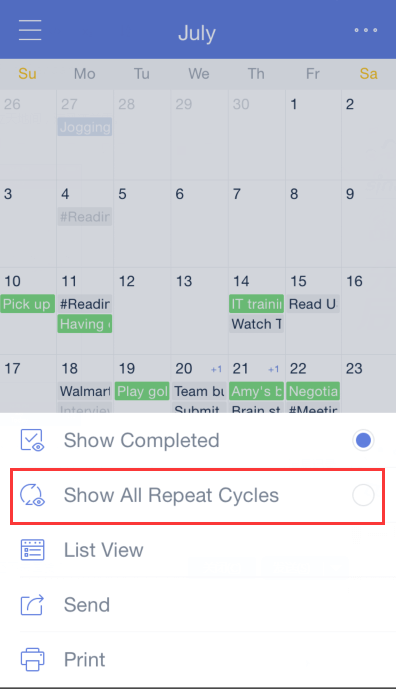

- Return to homepage
- Introduction
-
1. [TickTick Web version]
- 1.1. [Preference Settings]
- 1.2. [Personal Profile]
- 1.3. [Backup files]
- 1.4. [Premium Account]
-
1.5. [List]
- 1.5.1. How to create a new list?
- 1.5.2. How to create Custom Smart List?
- 1.5.3. How to create a list folder?
- 1.5.4. How to edit a list/folder?
- 1.5.5. How to share lists with TickTick users?
- 1.5.6. How to print a list?
- 1.5.7. How to close an inactive list temporarily?
- 1.5.8. How to delete a list?
- 1.5.9. What is "Inbox"?
-
1.6. [Task]
- 1.6.1. How to add a task?
- 1.6.2. How to use Smart Date Parsing when adding tasks?
- 1.6.3. How to add reminders ?
- 1.6.4. How to add a recurring task?
- 1.6.5. How to add a new task via email?
- 1.6.6. How to create a checklist?
- 1.6.7. How to check task progress?
- 1.6.8. How to set priority of a task?
- 1.6.9. How to upload attachment to a task?
- 1.6.10. How to print a task?
- 1.6.11. How to assign a task to others?
- 1.6.12. How to comment on a task?
- 1.6.13. How to check task activities? (Premium)
- 1.6.14. How to add tags to a task?
- 1.6.15. How to search for a task?
- 1.6.16. How to move a task to another list ?
- 1.6.17. How to import tasks from other apps into TickTick?
- 1.6.18. How to change the order of the tasks ?
- 1.6.19. What are the shortcuts in TickTick?
- 1.6.20. How to duplicate tasks?
- 1.6.21. How to set snooze time?
- 1.6.22. How to create reminder for subtask?
- 1.6.23. How to add a duration to task?
- 1.7. [Calendar Subscription]
-
2. [TickTick Android App]
-
2.1. [Installation & Account]
- 2.1.1. How to get the TickTick Android app?
- 2.1.2. How to sign in?
- 2.1.3. How to sign out?
- 2.1.4. What should I do if I forgot my password?
- 2.1.5. How to upgrade to/renew a Premium account?
- 2.1.6. How to edit my account information?
- 2.1.7. Can't use premium features after upgrading TickTick?
- 2.1.8. How to lock the app for privacy?
- 2.1.9. How to change themes?
- 2.1.10. How to adjust font size?
- 2.1.11. How to set language?
-
2.2. [List]
- 2.2.1. How to show or hide Smart Lists in TickTick?
- 2.2.2. How to create Custom Smart List? (Premium)
- 2.2.3. How to create a task list?
- 2.2.4. What is a list folder?
- 2.2.5. How to edit lists and folders?
- 2.2.6. How to send lists to other members?
- 2.2.7. How to share lists with other TickTick users?
- 2.2.8. How to accept a shared list?
- 2.2.9. How to reorder task lists?
- 2.2.10. How to show/hide details?
-
2.3. [Task]
- 2.3.1. How to create a task?
- 2.3.2. How to create checklists?
- 2.3.3. How to check task progress?
- 2.3.4. How to batch edit tasks?
- 2.3.5. How to change the order of the tasks?
- 2.3.6. How to set recurring tasks?
- 2.3.7. How to hide or show completed tasks?
- 2.3.8. Where can I view my completed tasks?
- 2.3.9. How to set default attributes of a new task ?
- 2.3.10. How to swipe tasks for quick actions?
- 2.3.11. How to upload an attachment to a task?
- 2.3.12. How to add tags to a task?
- 2.3.13. How to send a task?
- 2.3.14. How to search for a task?
- 2.3.15. How to add comment on a task?
- 2.3.16. How to assign a task?
- 2.3.17. How to create reminder for subtask?
- 2.3.18. How to add a duration to task?
- 2.4. [Calendar]
- 2.5. [Reminder]
- 2.6. [Widget]
-
2.1. [Installation & Account]
-
3. [TickTick iOS App]
-
3.1. [Installation & Account]
- 3.1.1. How to get the TickTick iphone app?
- 3.1.2. How to sign in?
- 3.1.3. How to sign out?
- 3.1.4. Forgot your password?
- 3.1.5. How to upgrade to\/renew a premium account?
- 3.1.6. How to edit my account information?
- 3.1.7. Can't use premium features after purchasing?
- 3.1.8. How to lock the app?
- 3.1.9. How to change the themes in TickTick?
- 3.1.10. How to change font size in TickTick？
- 3.1.11. What is the app badge count for?
- 3.1.12. How to set language for TickTick?
- 3.1.13. Why voice input can't recognize my language?
-
3.2. [List]
- 3.2.1. How to show/hide Smart Lists?
- 3.2.2. How to create a Custom Smart List? (Premium)
- 3.2.3. How to create task lists?
- 3.2.4. How to create folders for lists?
- 3.2.5. How to edit lists and folders?
- 3.2.6. How to share task lists?
- 3.2.7. How to accept a shared list?
- 3.2.8. How to show/hide details?
-
3.3. [Task]
- 3.3.1. How to create a new task?
- 3.3.2. How to create checklists?
- 3.3.3. How to check task progress?
- 3.3.4. How to batch edit tasks?
- 3.3.5. How to change the order of the tasks?
- 3.3.6. How to hide/show completed tasks in each list?
- 3.3.7. Where can I check all of my completed tasks?
- 3.3.8. How to create recurring tasks?
- 3.3.9. How to swipe tasks for quick actions?
- 3.3.10. How to upload attachments?
- 3.3.11. How to add comment to a task?
- 3.3.12. How to add tags to a task?
- 3.3.13. How to send a task?
- 3.3.14. How to assign a task?
- 3.3.15. How to search for a task?
- 3.3.16. How to move a task from one list to another?
- 3.3.17. How to create reminder for subtask？
- 3.4. [Reminder]
- 3.5. [Calendar]
-
3.1. [Installation & Account]
-
4. [Chrome Extension]
- 4.1. Installation & Account
- 4.2. [Task]
- 4.3. [List]
- 5. Video Tutorials
- 6. Filter
- 7. Smart Date Parsing
- Published with GitBook
How to get grid view of calendar? (Premium)
Grid View
To switch to the grid view of the calendar, tap the option menu in the upper-right corner of the list view and choose "Grid View".
Show or hide future cycles for repeating tasks
Tap the option menu in the upper-right corner, then tap "Show All Repeat Cycles" to toggle between showing and hiding the repeat cycles.
